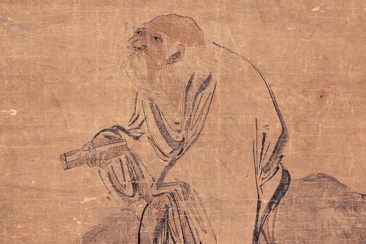
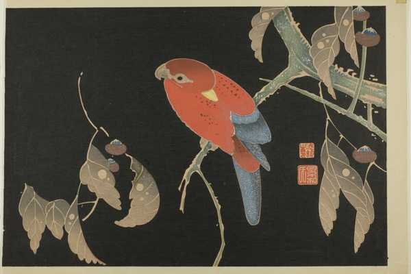
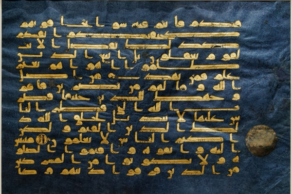
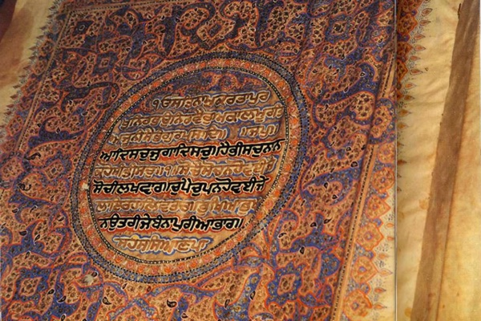

-
The Wisdom Never Written Down
A song can carry a law; beads can preserve an agreement. Oral traditions pass knowledge through people and places, much of it beyond the reach of a bookshelf.
-
The Torah
A family becomes a people, escapes slavery, and receives a law. The Torah follows them to the edge of the promised land, where Moses dies before they enter.
-
The Analects of Confucius
How do you become someone other people can rely on? Confucius works through that question in brief conversations about learning, family duties, and the conduct of rulers.
-

The Tao Te Ching
Water takes the low ground; a good ruler knows when to stop interfering. The Tao Te Ching asks how much of our trouble comes from trying too hard.
-

The Zhuangzi, the Book That Laughs
A cook finds the gaps in an ox; a philosopher dreams he's a butterfly. Zhuangzi's stories question the distinctions we rely on to make sense of things.
-
The Dhammapada: A Reading Guide
Reciting a teaching gets you little if you never practice it. These Buddhist verses return to what we do with anger and desire, and how suffering can end.
-
The Bhagavad Gita: A Guided Reading
Arjuna puts down his bow rather than fight his relatives. Krishna's answer joins duty with devotion and freedom from attachment, then persuades him to fight.
-
The New Testament
Paul's letters came before the Gospels. Read the accounts of Jesus alongside the disputes in the early churches, where questions about faith and belonging were already urgent.
-
Nagarjuna and the Emptiness of Everything
If suffering had a fixed nature, it could never end. Nagarjuna calls things empty because they depend on conditions, and uses that argument to explain how change is possible.
-

The Quran: A Guided Reading
The Quran opens with a prayer, then the laws of a community. Its chapters weave ordinary duties into warnings of judgment; their order often hides how the teaching developed.
-

The Guru Granth Sahib
This book is opened each morning and put to rest at night. Sikhs receive its hymns as their Guru, with devotion expressed through honest work and service.